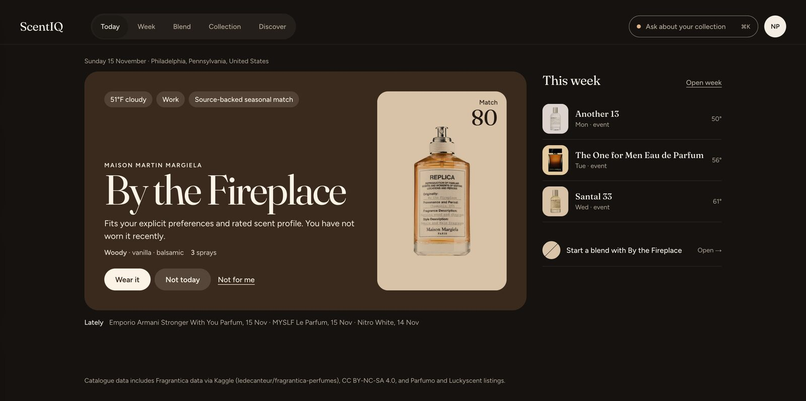
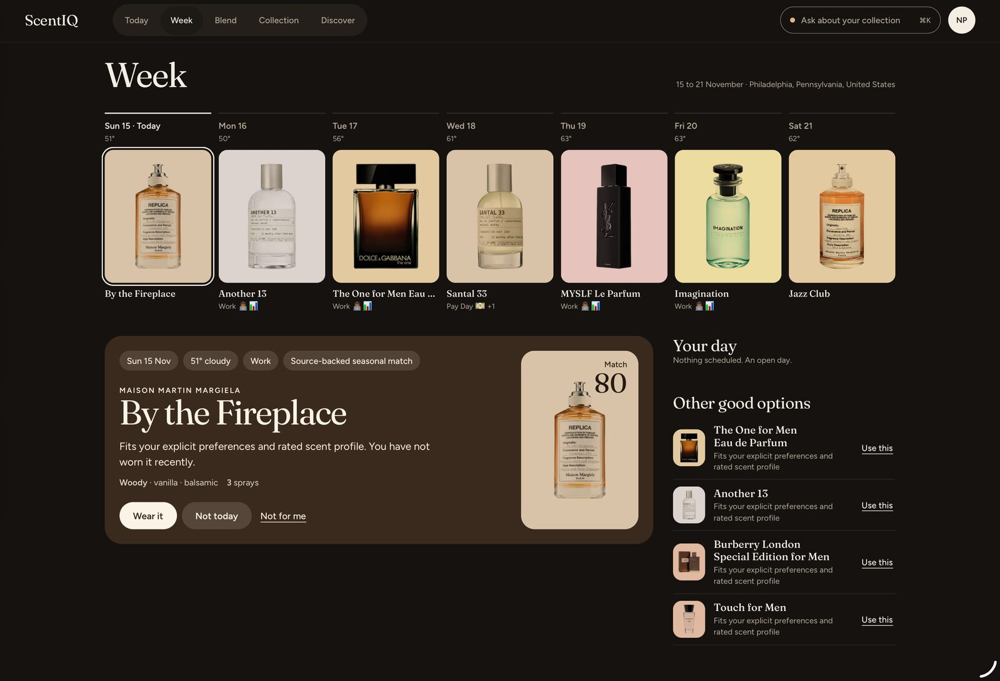
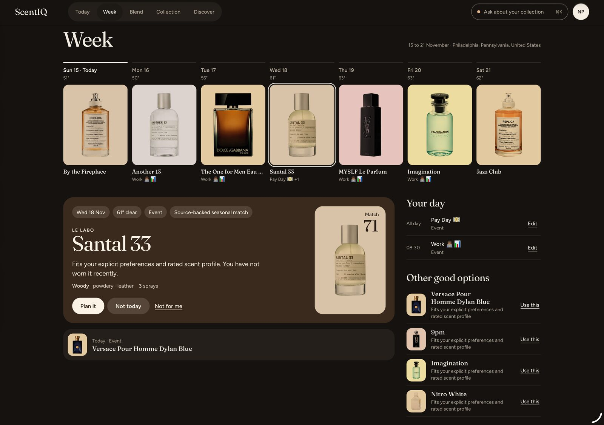
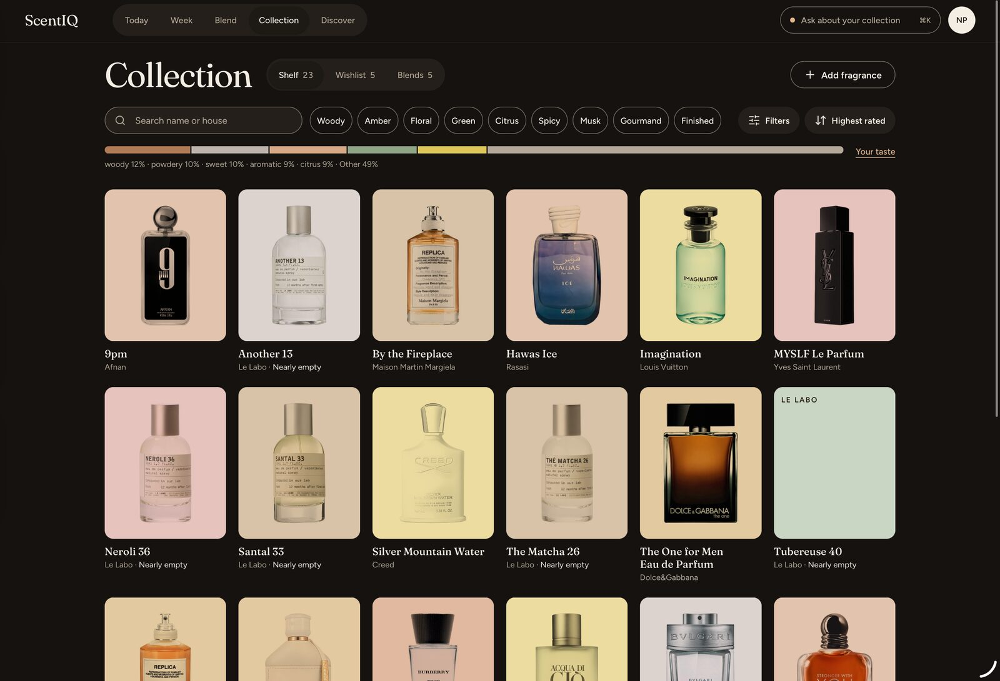
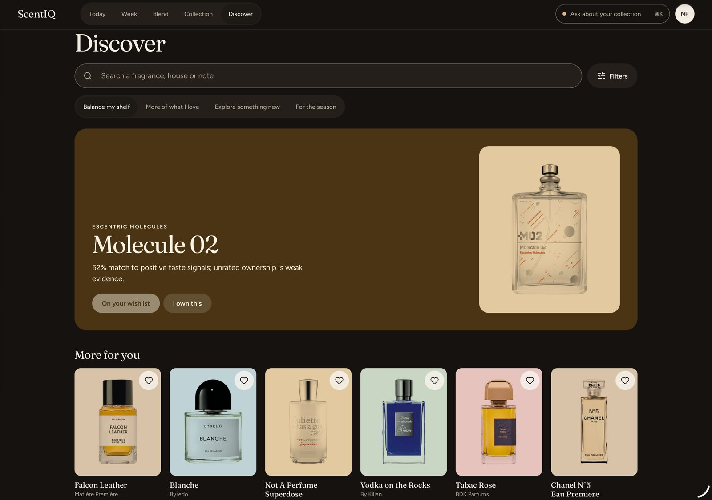
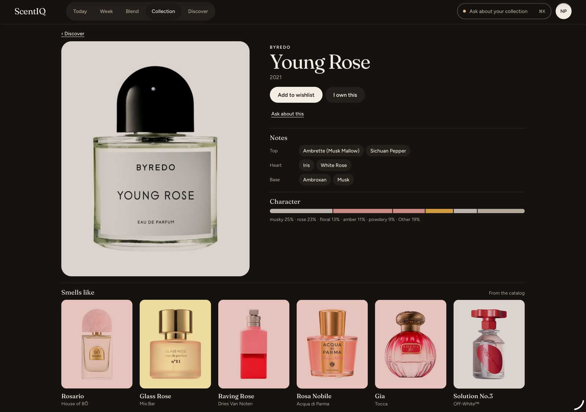
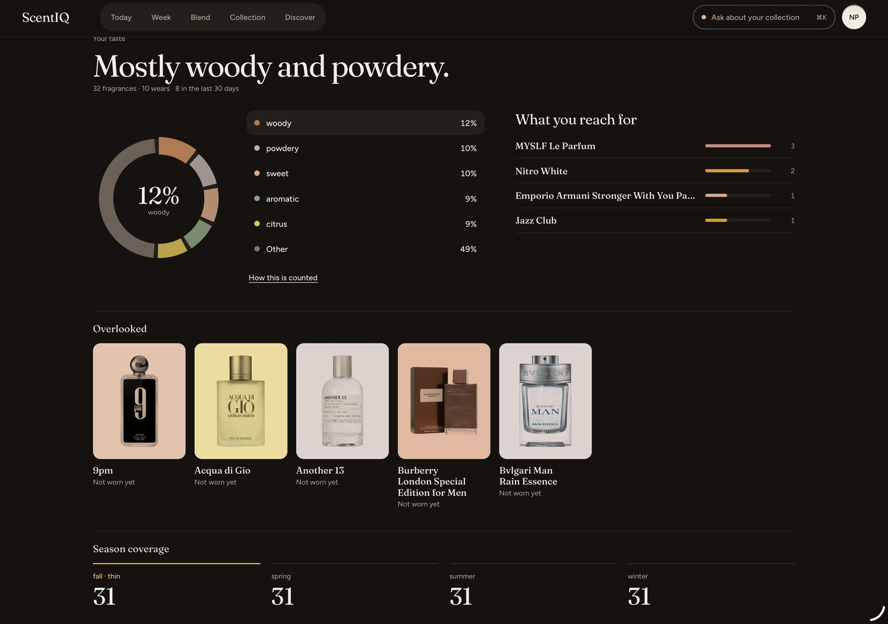
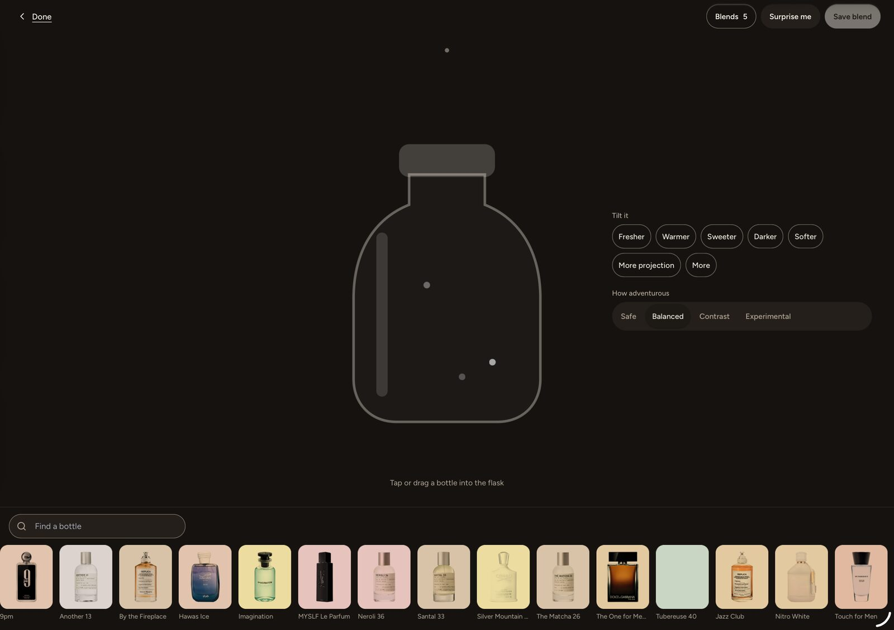
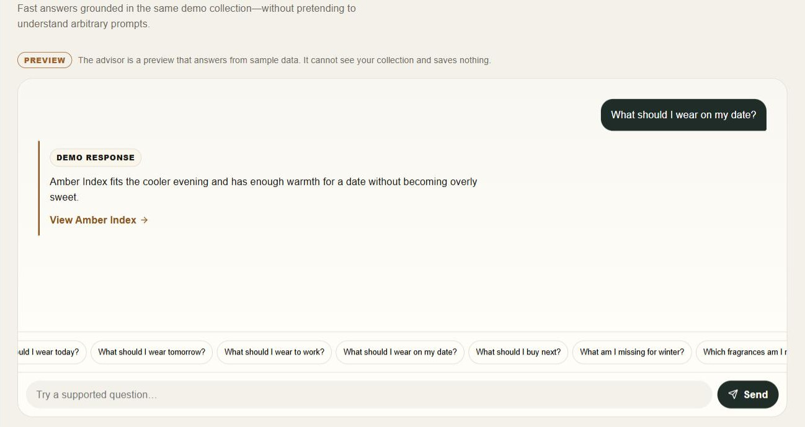
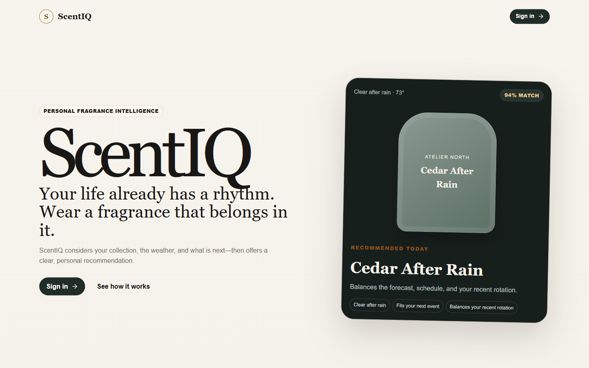

A personal fragrance intelligence app that considers your collection, the weather, and what’s next on your schedule — then offers a clear recommendation.
ScentIQ grew out of the same interest behind my eBay fragrance analysis. Instead of analysing a market, it helps each member get more out of the collection they already own. Members keep a persistent collection, log what they wear, upload private custom fragrance images, record private fragrances, and see insights computed from that history.
The repository is a lightweight monorepo. The frontend is Next.js 16 with React 19 and strict TypeScript; the API is FastAPI on Python 3.14 with SQLAlchemy, Alembic, and psycopg; and PostgreSQL 18 holds the fragrance catalog, collections, and wear history. The browser only ever talks to Next.js, which calls the internally hosted FastAPI service server-side — the API is never publicly routable. A generated OpenAPI contract keeps the two sides in step: continuous integration fails if the committed contract drifts from the running application.
Sign-in is invite-only through Clerk. FastAPI verifies each token’s signature, issuer, audience, and expiry, then maps the provider’s subject to an internal user, creating one on first contact. Authentication fails closed: if the identity configuration is missing, protected endpoints return 503 rather than serving unauthenticated traffic.
The catalog holds both shared curated fragrances and each member’s private custom entries. Partial unique indexes let the two coexist, every repository query carries an ownership predicate, and another member’s private row returns 404 rather than 403 so its existence doesn’t leak. Account deletion is a two-phase flow driven by a signed webhook, with a scheduled reconciliation job for any deletion that never completes.
Today shows a live Open-Meteo forecast for the member’s saved location and events from connected Google and Outlook calendars. Today and My Week use that context for persisted daily and weekly planning, sharing backend recommendation scoring, decisions, and wear feedback so suggestions can respond to what the member actually wears.
Layering Lab builds goal-aware pairs and three-fragrance stacks, then saves wear and rating history. Recommendations and collection insights are grounded in the member’s own catalog and activity rather than a disconnected demo dataset.
Ask ScentIQ has a grounded, tool-backed advisor path and a configurable Azure OpenAI Responses provider. The provider is constrained to bounded application context and has no model-initiated collection or calendar writes. Live Azure OpenAI inference remains pending endpoint and deployment configuration; until then, a deterministic fallback keeps the core recommendation experience useful.
The development environment is defined in modular Bicep: Azure Container Apps for the web and internally routed API, Container Registry, PostgreSQL Flexible Server, Key Vault, private Blob Storage, Application Insights, Log Analytics, alerting, and an availability test. Each workload uses managed identity access at narrow resource scopes rather than stored Azure credentials, and GitHub Actions deploys immutable images through OIDC.
An explicit migration job must succeed before application rollout; ordinary API startup never applies migrations. Smoke tests verify the same-origin application path after deployment. If a revision is unhealthy, the runbook restores the last known healthy image for rollback, while separate recovery procedures cover Storage, Key Vault, and PostgreSQL.
Profiles, preferences, collections, wear logs, custom fragrances, private images, weather, calendar context, planning, scoring, layering, and the grounded advisor path with deterministic fallback are implemented. Live Azure OpenAI inference remains pending configuration. Notification delivery remains future work.
The newest build replaces the earlier tabbed layout with a calmer, image-led interface designed around an iPad and a phone. Navigation collapses to five destinations — Today, Week, Blend, Collection, Discover — with the advisor one keystroke away from anywhere through an “Ask about your collection” command bar (⌘K). Every screen leads with a single decision rather than a dashboard of widgets. Today (shown above) builds one scored pick from the live forecast, the day’s context and wear history, with one-tap feedback (“Wear it”, “Not today”, “Not for me”) that feeds the next recommendation.
Recorded on an iPad against the deployed Azure beta.









404 instead of 403 so private rows don’t leak their existence.